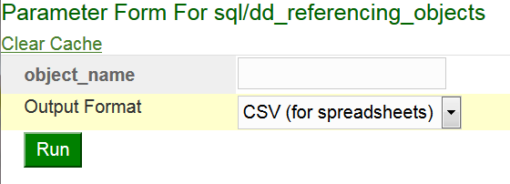
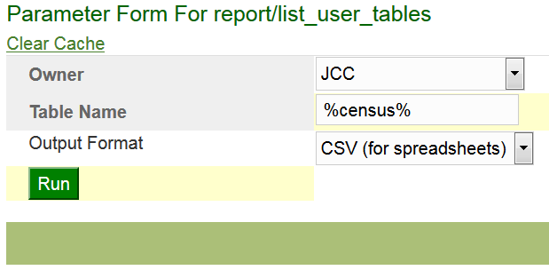

Presentation - Drop-in Reporting with Groovy
Introduction
This is a REAL solution to a real problem.
We have over 600 Oracle Reports applications that need to be converted into a new and non-deprecated format. These reports produce everything from CSV files to paychecks.
Oracle Reports isn't well suited to creating data files, so there had been an unfilled need for some time, but Oracle has started to give hints that Reports won't be around forever. We needed a new solution.
It started with a dream.
Many of our reports are essentially an SQL query, which we have to embed in some kind of program, which could be SQL*Plus, Oracle Reports, a web application, PL/SQL web pages, or other complicated tools). What if we could just drop that query into a container that will do the work of getting the parameters and formatting the output? Or, if the report is more complicated, how about a simple DSL that will let us specify the bare minimum of what we need?
I had the idea of storing the SQL in the database and serving them through SSB (mod_plsql), but then Groovy and Grails came into my life.
Making it happen
Groovy gives us the power to make this dream a reality.
Groovy has features that make this idea practical. Some of them are common to any programming language, and some of them are unique to Groovy.
- What is Groovy?
The Groovy programming language is a chopped, lowered, louvered, and flame-painted Java.
- Properties that Groovy shares with many programming environments
- Dynamic SQL (PL/SQL can do it, but it is brittle and I usually regret using it.)
- Read and write from the file system
- Read and write web protocols
- Runs on the Java Virtual Machine (which makes it easy to deploy applications through Tomcat and opens the door to a huge library that is easy to access through Maven repositories)
- Uniquely Groovy
- Easy-to-use interface for SQL and XML
- Closures and functional programming
- Scripting
- Builders and DSL's
- "Easy" web applications with Grails
- Easy-to-use interface for SQL and XML
- Closures and functional programming
- Scripting
- Builders and DSL's
- "Easy" web applications with Grails
Jasper Reports
We chose Jasper Reports as a replacement for Oracle Reports for a number of reasons.
- It can do the job.
- It is a Java-based application
The fact that we can integrate it into our Groovy programs means that we can deploy it within a Grails application or other structure.
- It uses XML source code
The source for our reports will be easy to edit, examine, and track with version control.
- It gives our developers the freedom to create through a GUI or text tools.
It gives us the best of both worlds.
Implementation
- General Principles
- Open Source Tools
These tools require no licensing fees and are generally high quality and developer-friendly.
- Plain text
Storing the source code for our reports in text files on the report server means that we can manipulate them with a host of standard tools. For example, we can:
- Protect our source with Git revision control
- Search for table references using standard operating system commands (grep/findstr)
- Use the editor of our choice to edit them
- Environment Agnostic
The report knows nothing of the environment or front end that it will execute in.
- Open Source Tools
- Strategy
Overview
What do these reports look like?
Let's see what kind of reports are possible.
SQL example
The simplest report we can define is an SQL statement.
sql/dd_referencing_objects.sql
/* List all objects that reference this one. */ select d.referenced_owner r_owner, d.referenced_name r_name, d.referenced_type r_type, d.owner, d.name, d.type from all_dependencies d where d.referenced_name like upper(:object_name) order by referenced_owner, referenced_name, referenced_type, name, type
Note the bind variable in the query, :object_name. When we run the report, it displays a parameter form with that parameter.

Let's enter jcc_gbr_email, the name of one of our packages, and look at the CSV output.
R_OWNER,R_NAME,R_TYPE,OWNER,NAME,TYPE JCC,JCC_GBR_EMAIL,PACKAGE,JCC,JCC_GBR_EMAIL,PACKAGE BODY JCC,JCC_GBR_EMAIL,PACKAGE,PUBLIC,JCC_GBR_EMAIL,SYNONYM
Simple Groovy SQL Example
Our second example shows a simple case of the Groovy-based DSL.
First, we tell the builder that we are creating a report, with a title, "List User Tables."
report(title: 'List User Tables') { // Parameters, data generators and other // interesting things will go here. }
Next we define a parameter named "owner" with a list of values defined by an SQL query.
// Create a parameter for the owner of the table param(name: 'owner', label: 'Owner') { // Add a list of values that excludes Oracle schemas and // schemas that don't own any tables list_of_values query: """select username from all_users where oracle_maintained = 'N' intersect select owner from all_tables""" }
Then we add a second parameter.
// A second parameter for the table name. Make it default to '%' param(name: 'table_name', label: 'Table Name', description: 'List tables matching this value, with Oracle wildcards.', 'default': '%')
And, finally, Add a query which references these parameters.
// Get the data from an SQL query. This references the parameters with // a colon. sql query: """select table_name, comments from all_tab_comments where owner = :owner and table_name like upper(nvl(:table_name,'%')) and comments is not null order by table_name"""
When we put this all together, we get this script.
/** A report that lists the tables belonging to a particular schema */ report(title: 'List User Tables') { // Create a parameter for the owner of the table param(name: 'owner', label: 'Owner') { // Add a list of values that excludes Oracle schemas and // schemas that don't own any tables list_of_values query: """select username from all_users where oracle_maintained = 'N' intersect select owner from all_tables""" } // A second parameter for the table name. Make it default to '%' param(name: 'table_name', label: 'Table Name', description: 'List tables matching this value, with Oracle wildcards.', 'default': '%') // Get the data from an SQL query. This references the parameters with // a colon. sql query: """select table_name, comments from all_tab_comments where owner = :owner and table_name like upper(nvl(:table_name,'%')) and comments is not null order by table_name""" }

Running the script gives us the following result.
| TABLE_NAME | COMMENTS |
|---|---|
| T_CENSUS_ROSTER | This table has one row per course per term. |
| T_STU_CENSUS_ROSTER | The roster of students in this course |
Groovy Dynamic SQL Example
Sometimes our situation is less favorable, and we feel the need to customize the SQL before we execute it. For instance, we might want to have a different where clause when the user enters certain search criteria.
Here is a table (SUMMIT_GRADES) with mid-semester grades and final grades.
| STUDENT_ID | SEMESTER | MID_GRADE | FINAL_GRADE |
|---|---|---|---|
| 12 | 201612 | A | A |
| 13 | 201612 | C | B |
| 14 | 201612 | F | A |
| 12 | 201705 | B | A |
| 13 | 201705 | C | A |
| 15 | 201712 | F | D |
And we will create a dynamic SQL report that prints a summary of the grades.
report(title: "Grade Totals") { param(name: 'mid_or_final', label: "Show Midterm or Final Grade?", 'default': 'F') { list_of_values values: [['F', 'Final'], ['M', 'Midterm']] } param(name: 'grade', label: 'What grade do we report on?', 'default': 'F') { list_of_values values: ('A'..'F').collect{[it, it]} } // The data source for this report is a dynamic SQL query. // The dynamic_sql method takes a closure as an argument. // This one will use the value of the mid_or_final parameter // to choose which grade column to report on, and it will // also use the grade parameter to set one of the column names. dynamic_sql sql_closure: { params -> // Get the parameters from the closure arguments. String mid_or_final = params.mid_or_final; String grade = ('A'..'F').contains(params.grade)?params.grade:'F'; // Set the grade column String grade_column = (mid_or_final == 'M')?'mid_grade':'final_grade' // Return an SQL query. """ select semester, count(${grade_column}) as ${grade_column}, sum(decode(${grade_column}, :grade, 1, 0) ) ${grade}_grades from summit_grades group by semester order by semester """ } }
When you run the report with :mid_or_final = 'M' and :grade = 'F', the closure returns the following SQL query.
select semester, count(mid_grade) as mid_grade, sum(decode(mid_grade, :grade, 1, 0) ) F_grades from summit_grades group by semester order by semester
We see the following results.
| SEMESTER | MID_GRADE | F_GRADES |
|---|---|---|
| 201612 | 3 | 1 |
| 201705 | 2 | 0 |
| 201712 | 1 | 1 |
Groovy Closure Example
Let's look at an example that would be very hard to do in most reporting tools.
SQL> select * from summit_sql;
| ID | SQL_QUERY |
|---|---|
| 1 | select user from dual |
| 2 | select sloozle from fleem |
This table holds two SQL select statements, one of them valid and the other probably not.
/** A second closure query example */ report(title: "Invalid Summit Queries") { // Specify a closure to return the report data. data_generator closure: { // We have to define the columns explicitly column(name: 'id', label: "ID"); column(name: 'sql_query', label: "SQL Query"); column(name: 'error', label: "Error"); // "sql" is a pre-defined groovy.sql.SQL object def queries = sql.rows("select * from summit_sql order by id"); // Loop through all the rows in the table and test each query queries.each { q -> query_row = [id: q.id, sql_query: q.sql_query, error: '']; // Test the query from the table by invoking explain_plan. If // the query fails to compile, it will throw a SQLException. try { // Beware of Groovy's GString String explainQuery = "explain plan for ${q.sql_query}" sql.execute(explainQuery); } catch (java.sql.SQLException e) { query_row.error = e.getMessage(); } if (query_row.error?.size()) { // "row" is a predefined method that add a row // to the result set. row(query_row); } } } }
| id | sql_query | error |
|---|---|---|
| 2 | select sloozle from fleem | ORA-00942: table or view does not exist |
Implementation
Groovy Closures and Delegation
Closures are functions that can be referenced like other variables.
The delegate provides methods and properties that the closure references but does not include.
Groovy Builders
Instance of groovy.util.BuilderSupport
Keep track of the tree structure that is implicit within Groovy source code
report(title: "Sample report") { // When this closure executes, the parent node will be the object created // by the report method. param(name: "sample_parameter") { // When this closure is executed, the parent node will be the parameter // created by the param method. } }
Require you to implement three methods
Require you to implement three methods
- createNode
- addParent
- nodeCompleted